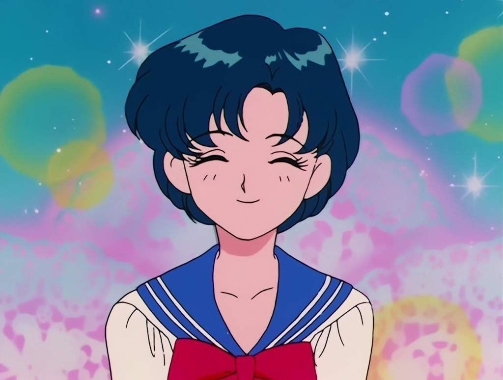

<- Повернутися на головну сторінку
<- Красуня воїн Сейлор Мун
<- Сейлор воїтельки
Амі Міцуно

Головна інформація
Особистість:
Найпомітнішою рисою характеру Амі є високий інтелект. Вона завжди займає високі місця на олімпіадах, через що почали ходити чутки про те, що у неї рівень IQ 300 балів. Дівчинка вільно володіє англійською мовою,займається шахами та плаванням, дуже любить математику та інформатику. Не дивлячись на свій розум та нагороди, вона має м'який та ніжний характер, сором'язлива, і довго не мала друзів. Дуже сильно прагнула отримати похвалу від мами та вчителів, а згодом стала впевненіше, і могла підтримувати самооцінку самостійно. В команді вона аналізує ситуацію швидше, ніж інші воїни, Луна подарувала їй мінікомп'ютер. Амі володіє стихією води у всіх агрегатних станах, і може засліпити ворогів за допомогою туману
Cім'я:
Розумняшка живе разом з мамою Саеко Міцуно, яка працює лікарем, та приділяє малувато уваги доні. Її батьки розведені, а тато в даній версії історії не згадувався
Відносини з окремими персонажами:
Рьо Урава - хлопець, закоханий у Амі. Вони вчилися у одній школі, поки він не поїхав за кордон. Урава був носієм жовтого райдужного кристалу, через що міг передбачати майбутнє. Для того, щоб привернути увагу Міцуно, він навчався день і ніч, і зміг відсунути героїню на друге місце серед учнів. Вони стали хорошими друзями
Майбутнє:
В майбутньому Амі буде боротися разом з іншими воїнами в другому льодовиковому періоді. Після коронації Нової Королеви Сереніті стане придворною стражницею, як Рей, Мако та Мінако. Під час атаки Немезиди впаде в кому, після перемоги над злом юних Сейлорів повернеться до нормального життя
Галерея